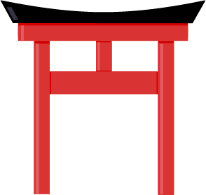
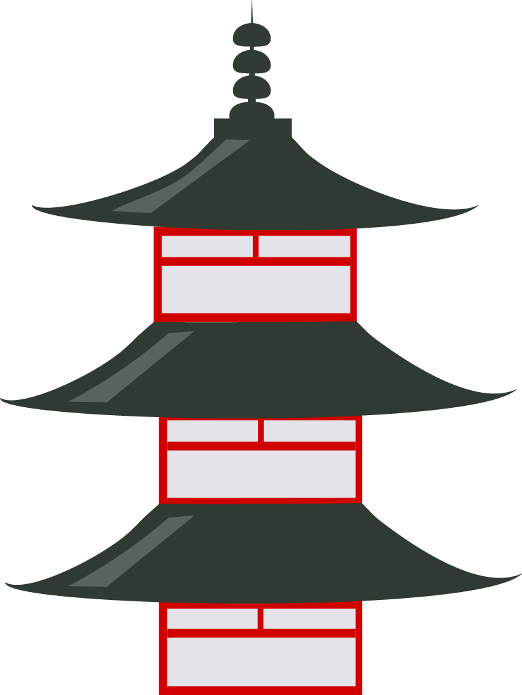

Shinto and Buddhism are Japan's two major religions. Shinto is as old as the Japanese culture, while Buddhism was imported from the mainland in the 6th century. Since then, the two religions have been co-existing relatively harmoniously and have even complemented each other to a certain degree. Most Japanese consider themselves Buddhist, Shintoist or both.
Religion does not play a big role in the everyday life of most Japanese people today. The average person typically follows the religious rituals at ceremonies like birth, weddings and funerals, may visit a shrine or temple on New Year and participates at local festivals (matsuri), most of which have a religious background

